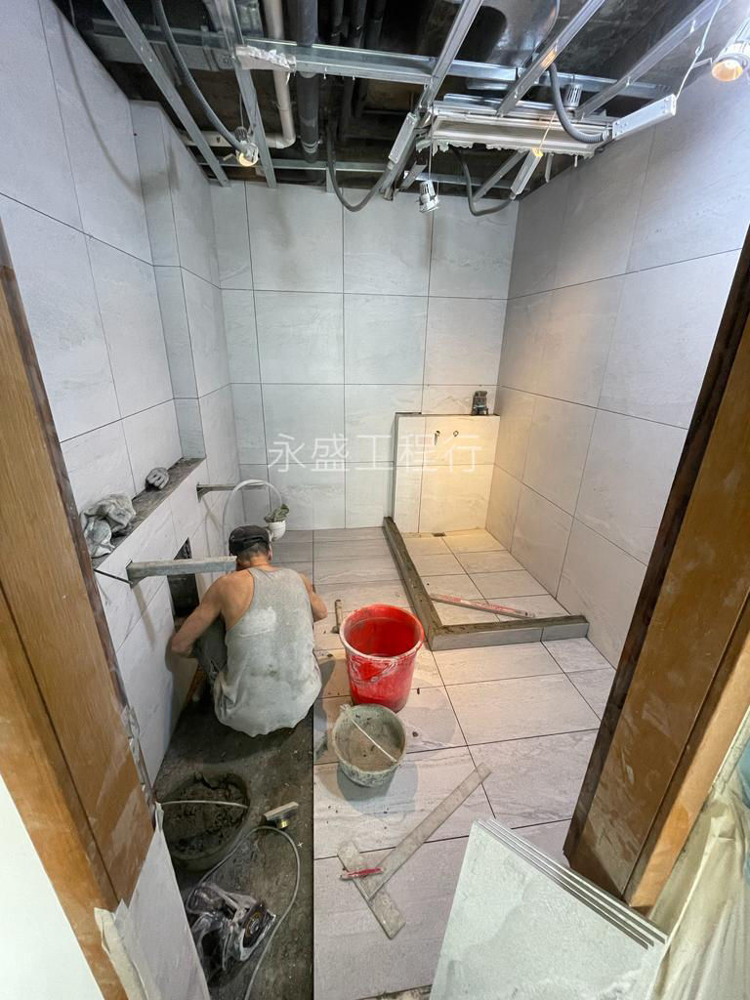

專業泥水師傅正在為完成防水層的浴室鋪設磁磚。
浴室及廁所漏水通常由防水層老化或暗喉滲漏引起。專業的防漏工程必須嚴謹執行以下步驟：
永盛工程行
WING SHING ENGINEERING COMPANY
UNIT1, 7/F, BLK D, MAI WAH IND BLDG, KWAI CHUNG
浴室是家居生活中用水最頻繁的地方，也是最容易發生滲漏的區域。一旦出現浴室漏水，不僅會導致自家牆身發霉、磁磚脫落，更可能引發樓下住戶的投訴甚至法律紛爭。作為專業的香港防水公司，永盛工程行擁有豐富的廁所防水維修經驗，本文將帶您了解如何科學應對浴室滲漏問題。
滲漏往往在暗處滋生。如果您發現浴室外牆出現「壁癌」（白華現象）、天花板有水漬、或是室內有一股揮之不去的霉味，這通常是浴室漏水的訊號。更明顯的徵兆包括磁磚縫隙長期潮濕、踢腳線變形等。及早尋找專業的防水師傅進行漏水檢測，能避免損失擴大，節省後續的防水工程價錢。
廁所防水失效的原因多種多樣。最常見的是建築物自然沉降導致結構裂縫，破壞了原有的防水層。此外，劣質的填縫材料老化、排水管（暗喉）破損、或是裝修時防水高度不足（如企缸位置未塗刷至 1.8 米標準高度）都是潛在誘因。特別是在一些舊式大廈或村屋，村屋防水層的自然損耗更是普遍現象。
面對滲漏，選擇合適的防漏工程方案至關重要：
永盛工程行拒絕傳統「靠估」的維修方式。我們採用先進儀器，如紅外線漏水檢測、微波偵測及色水測試（包括螢光劑測試）。這能精準判斷是供水管漏水、排水管漏水還是防水層失效，避免盲目打拆，為業主節省不必要的開支。當您在考慮「防水公司邊間好」時，檢測設備的專業度是一個重要指標。
浴室維修是一項細緻活，需要經驗豐富的防水師傅。優質的防水公司推薦必須具備完善的售後防水保養。永盛工程行提供長達十年的保固承諾，這代表我們對工藝的極致追求與對客戶的負責任態度。
浴室漏水拖得越久，維修成本越高。選擇具備科學設備與豐富經驗的香港防水公司，才是解決問題的捷徑。立即預約永盛工程行的免費諮詢服務，還您一個乾爽無憂的衛浴空間！